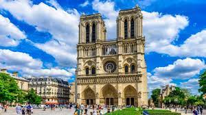

Pontos turísticos da frança
Torre Eiffel em Paris
A Torre Eiffel é o grande símbolo de Paris e foi construída por Gustave Eiffel em 1889 para celebrar os 100 anos de revolução francesa. Ela possui 325 metros de altura, 1.665 degraus e conseguiu se manter como a construção mais alta do mundo até 1930. A Torre Eiffel está localizada em um amplo jardim muito bonito e atualmente, é o ponto turístico pago mais visitado do mundo. Você pode comprar antecipadamente o ingresso para subir a torre (até o segundo ou até o terceiro andar, que é mais caro) e pegar uma fila mais rápida.

Museu do Louvre em Paris
Outro ponto de turístico imperdível da França é o Museu do Louvre, novamente em Paris. Esse museu é um dos maiores e mais famosos do mundo. Ele fica bem no centro da cidade, entre o Rio Sena e a Avenida Champs Élysées. O Louvre possui um acervo com mais de 380 mil objetos, que vão desde relíquias do antigo Egito até mesmo pinturas modernas. Entre suas obras de destaque, estão o quadro da Mona Lisa e a escultura da Vênus de Milo. O museu encanta a todos os visitantes e é um passeio imperdível para fazer em Paris e na França.
Catedral de Notre Dame em Paris
A Catedral de Notre Dame é uma das catedrais góticas mais antigas do mundo e também fica em Paris. Construída há oito séculos, a Catedral de Notre Dame recebeu seu nome em homenagem à Virgem Maris. Desde o incêndio que ocorreu em 2019, ela está fechada para visitação. Porém, ainda assim vale a pena vê-la e tirar fotos de seu exterior, que é deslumbrante. Hoje, a Catedral é considerada o Marco Zero de Paris, e a partir dela são marcadas todas as distâncias geográficas da França.
Arco do Triunfo em Paris
O Arco do Triunfo de Paris foi construído a mando de Napoleão, em 1806, e é um símbolo do império e um marco na história francesa. Em suas paredes estão gravados os nomes de centenas de militares que lutaram junto com Bonaparte. Além disso, aos pés do monumento está o túmulo do Soldado Desconhecido, desde 1920, em homenagem aos soldados mortos na Primeira Guerra Mundial. Durante a sua visita, aproveite para subir até ao topo do Arco do Triunfo para ter uma vista fantástica de Paris, sua arquitetura e pontos turísticos encantadores.
Jardim de Luxemburgo em Paris
Entre os pontos turísticos da França, que estão localizados na capital Paris, está o Jardim de Luxemburgo. O país conta com parques deliciosos para passeios, nos quais é possível caminhar, fazer piquenique, relaxar ou simplesmente apreciar suas belezas. E no Jardim de Luxemburgo não é diferente. Lá também está o Palácio de Luxemburgo, que mesmo de fora, garante uma visão digna de cartões postais. Se você se interessar, pode ver mais o que fazer por lá em nossa matéria completa sobre o Jardim de Luxemburgo em Paris.